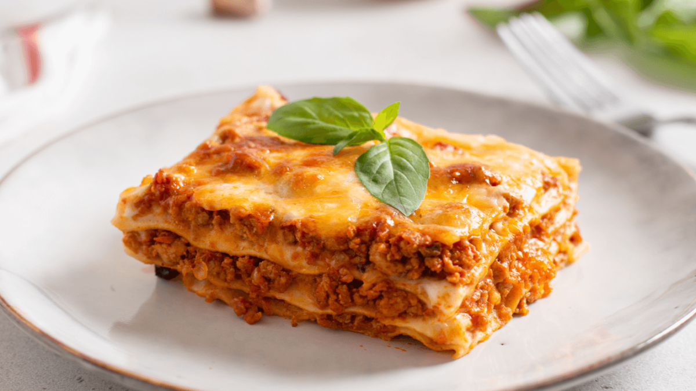

Saludos a todos y todas que visiten mi perfil de presentación.
Me les presento mi nombre es Erick Josué Caraballo Tapia, nacido el 12 de diciembre del 2000. En Santo Domingo,
República Dominicana un país con una rica cultura y tradiciones, y hermosas playas.
Mi madre es de la capital, osea de Santo Domingo y mi padre es de un pueblo de Puerto Plata, ambas provincias de la República Dominicana.
Soy una persona de varios gustos me gusta hacer muchos tipos de cosas, como lo serian:
Siempre estoy buscando aprender algo nuevo, por eso en este sitio web puedes encontrar información sobre mis habilidades
Aunque ahora mismo no practico ningun deporte me gusta mucho el ajedrez, voleyball, y basketball
Soy estudiante de la Universidad Automa de Santo Domingo (UASD), donde estudio la carrera de Informatica, una de las ciencas mas importantes en la epoca moderna de la actualidad.
Actualmente estoy cursando 5 materias y un laboratorio, con un total de 18 créditos en el semestre.
Una de mis comidas favoritas es la lasaña, casi literalmente puedo comerla todo el dia

Y como es una de mis comidas favoritas, he descidido agregar una receta:
Para hacer una deliciosa lasaña necesitamos los siguientes ingredientes:
Luego de eso seguiremos los siguientes pasos
En una sartén, vierte el aceite, sofríe la carne hasta que este gris, agrega la cebolla, ají morrón, orégano y los sobres de Caldo en Polvo Gallinita con Tomate MAGGI®, cocina por 1 minuto, agrega el agua y cocina hasta secar, reserva.
En una olla, añade la mantequilla, la Crema de Leche Nestlé®, el sobre de Caldo en Polvo Gallinita MAGGI® y la nuez moscada, mezcla bien, calienta y reserva.
En un molde para horno, vierte una capa de salsa para cubrir el fondo, coloca una capa de lasaña, añade la mitad de la carne, luego esparce un poco de queso mozzarella, repite este proceso hasta terminar con queso mozzarella y parmesano. Lleva al horno previamente precalentado a 350°F y hornea por 25 a 30 minutos. Deja refrescar por 5 minutos y sirve.
Y esos son los pasos para hacer una lasaña, receta tomada de: Nestlé®